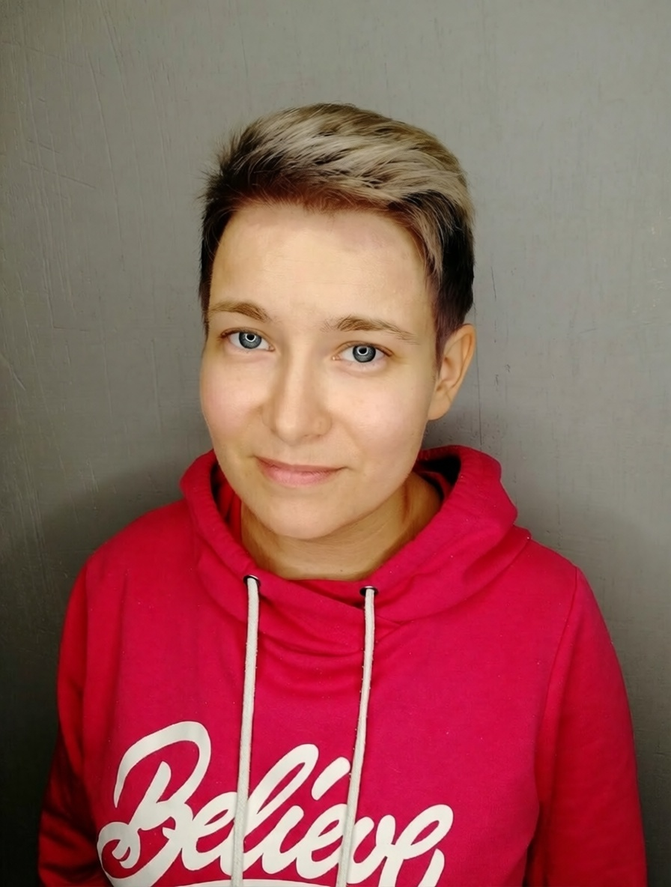

Open to work
Коротко обо мне
Разрабатываю интерфейсы на React и TypeScript, проектирую frontend-архитектуру, провожу code review и помогаю командам выпускать стабильные продукты.

Разрабатываю интерфейсы на React и TypeScript, проектирую frontend-архитектуру, провожу code review и помогаю командам выпускать стабильные продукты.